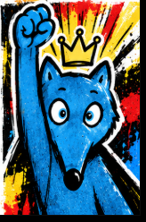

Zou Maï · Défi de calcul mental
LE NOMBRE CIBLE
Ton propre parcours : une addition pour commencer, puis de nouveaux calculs dès le défi suivant.

Comment jouer ?
- Atteins le nombre cible avec tout ou partie des cinq nombres. Au début, une seule addition peut suffire.
- Chaque carte ne sert qu’une fois. Combine deux cartes, puis réutilise le résultat.
- Les opérations donnent des points : + 1, − 2, × 1, ÷ 3. Atteindre la cible donne 5 points.
- Plus tard, avec les cinq nombres et les quatre opérations différentes, essaie le coup Mathador : 18 points.
Quatre minutes par tirage. Seuls les résultats intermédiaires entiers positifs sont acceptés. Ce jeu Zou Maï est indépendant du jeu officiel Mathador ↗.
04:00Score du défi : 0 point
Nombre cible
Cartes disponibles
Choisis un nombre, une opération, puis un autre nombre.
Tes calculs
À toi de jouer !
Top 10 de la classe
Chargement du classement… Seuls les prénoms ou pseudos sont affichés.